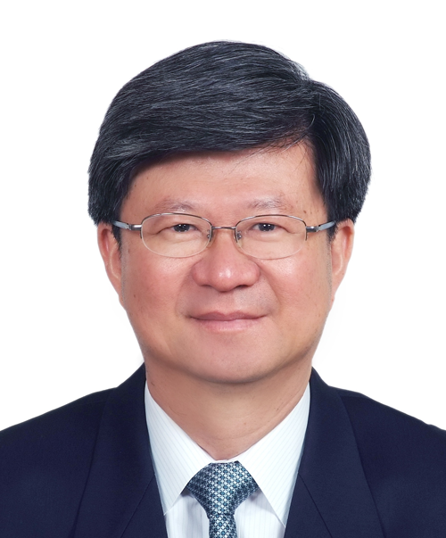

吳思華
會議相關資訊我們都已經公開了，唯一沒有公開的就是所有委員的個人名單及在會議中個人發言情況，因為這涉及委員個人權益，基於保護的原則，我們認為不該公布個人資訊。而且按照過去慣例，所有委員名單在課綱確定以後，正式實施完成，也是會公開的，只是不適合在討論的過程中公開，我們認為這樣對委員的權益是一種保護，也符合我們邀請委員時的承諾，我們應該按照這樣的原則，繼續來推動。
我們所看到的各種案例，在不同的法庭有不同的判例，在最高法庭的判決上，也有很多是要求不公開的，為了使未來所有行政工作，不只限於課綱的問題，所有教育部的工作及行政院的工作，在推動上都能夠維持穩定，我們希望法律上的見解可以統一，統一以後，未來大家在工作上可以更容易一點，這也是我們希望上訴最主要的理由。
我個人不是歷史專業，不過客觀地說，這次的微調真的只是微調，剛才有報告，我們是在合乎憲法、符合國際脈動以及回應社會現實所需要的情況之下
我們在所有會議過程中，對於可以公開的資訊，其實都已經儘量公開了。
檢核小組是一個由專家組成的工作小組嘛！
有關程序的部分，其實監察院已經做過調查，監察院也同意整個過程在行政上是合法的，我想我們必須在這個基礎上，繼續推動所有相關事情。
課綱是去年就公布了，並不是現在才公布，所以所有的書商都已編寫完成，現已在進行審查了，而且審查工作幾乎都完成了，所以現在並沒有要公開課綱的這件事情。
對於現在在進行的課綱討論，我們都秉持這個態度在處理，但是對於個人權益的部分，我們還是覺得應該得到相當程度的保障，否則以後在審查會的過程中，每位委員在審查會的個人發言，都要在會外被引述，或者被攻擊
所有的課綱現在就已經攤在社會大眾面前，大家如果要檢驗，可以直接去檢驗課綱。
基於保護個資的原則，涉及個人意見的部分，沒有辦法公開。
就這次微調的過程中我所看到的資料顯示，這次微調真的只是微調，台灣史的部分增加了孫中山來台尋求台人支持；台人參與革命；中華民國建立；台人與抗日戰爭等相關的資訊，同時也建議增加殖民政府對台灣人民經濟與土地的侵害；多數貿易自由由日本商社壟斷的說明，藉以強調、突顯台灣人民的主體性。
蔣偉寧
我要特別說明的是，你們每一次要錄音檔等資料，每一次要的東西都不一樣，不管你們要什麼，只要合乎法律規範，該提供也符合公益的資料，我們都會提供。但是，如果要公開的部分屬於委員意見之表達，公開後恐生寒蟬效應，我們就不會提供。
您剛才說到的「去台灣化」，請問您這哪一點有去台灣化？完全沒有，這完全是提升台灣的主體性。
實我已經跟你講得很清楚，從政府資訊公開法的角度來看，委員的名字一定要蓋掉......
我已經跟你講了，你們每次都寫一大串籠統又很多的東西，所有資料都要公開......
我們會根據政府資訊公開法辦理。
用「黑箱」這個字是完全不合適的，他們是所有相關的程序......我沒有逃避任何事情。
我會根據政府公開資訊法，將該做的公告及處理，全部都提出來。
這次課綱微調，我們是從國際脈動、社會變遷，甚至是進一步從更合乎史實思考的方向上去做努力
形成共識的過程裡，為了要讓他們能暢所欲言，我們於法是不能隨便公開的，如果公開，他們可能會說我們違反了規範。
政府資訊公開法就是希望每個委員都能充分表達意見，如果事前公開，，他做決定時可能會受到影響，如果事後公開他的發言，可能會有攻訐，大家可以看到社會上對於委員所表示的意見，所以不是不能讓人家知道，而是會造成委員很多的困擾，以後大家都不來擔任委員了
課綱2月10日已經公告，根據行政程序法它已經生效，所以這部分沒有撤銷的問題。第二，委員詢問可否暫緩實施？教科書調整必須給予適當的緩衝時間，根據以往慣例，審定後的教科書至少使用3年，所以新課綱將於104年8月1日正式施行，並非馬上適用。有媒體報導我們將改在今年開始適用，並非如此，這一點我很明確地講。第三，關於考試的問題，考試基本上是根據課綱命題，課綱既已做了調整，我不能在此規範未來老師命題時這部分不能寫，可是我相信命題老師一定有其智慧，他會做適當的處理。
我不能確認老師會不會就這部分命題，我沒有說老師一定要就這部分命題，這部分我不能去指導老師不命題。
我絕對不能違法隨便給您資料，如果我給了，那麼我就違法了。
這個課綱完全沒有違法，「違法」是您說的。這是合法、合程序的。
依法可以提供的資料，我們絕對會提供，有些過程中的相關資料，為了保障委員，讓他們能夠暢所欲言，我們不能隨意提供，而且最高行政法院也針對這部分做過解釋，也依照政府資訊公開法做過處理